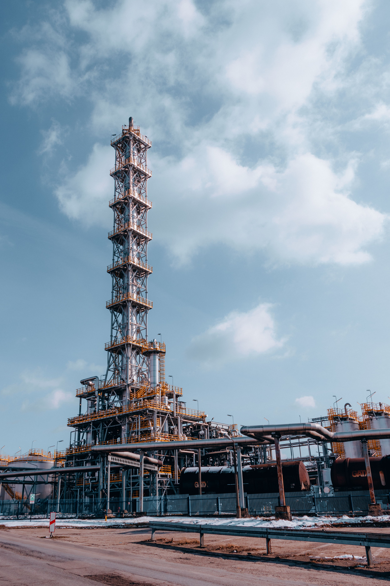
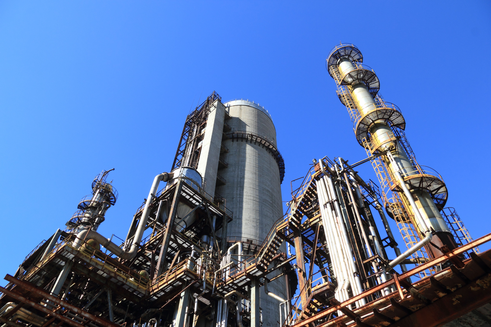
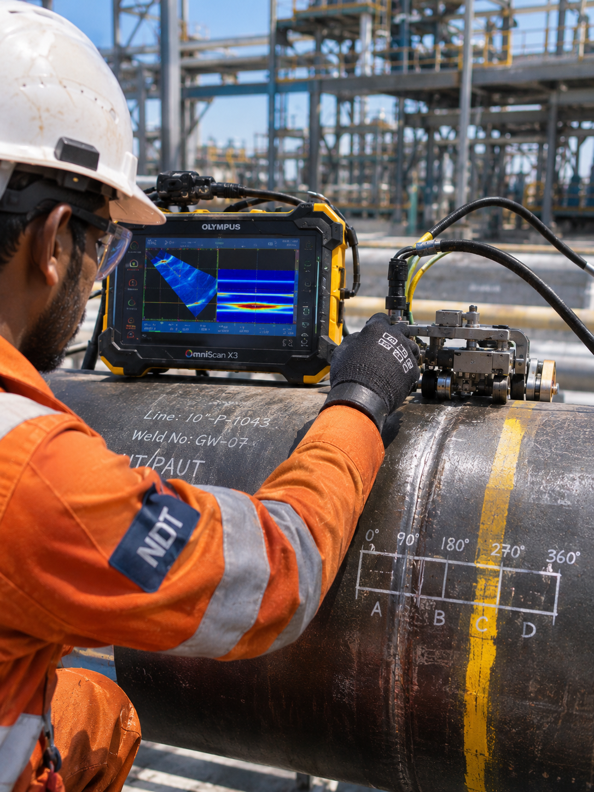
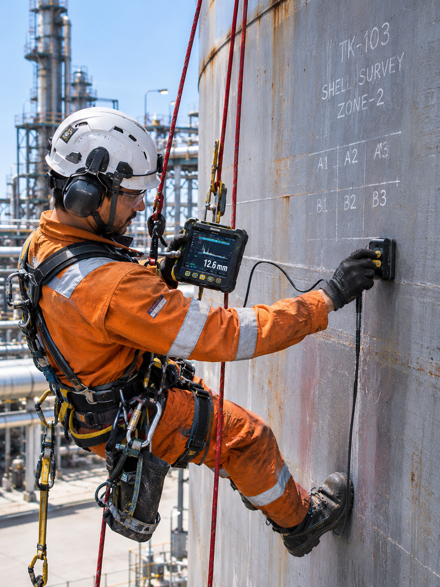

Oil & gas inspection
We inspect whatthe eye can’t see.
Certified non-destructive testing for refineries, pipelines and process plants.
Certified non-destructive testing for refineries, pipelines and process plants.
Thickness gauging and flaw detection on live pipes, vessels and tanks.
Gamma and X-ray radiography with barriers, controlled exposure and full source accountability.
Fast, sensitive detection of surface and near-surface defects on ferrous welds.
Crawler-driven imaging that gives you a permanent record of each weld.
IRATA-trained inspectors for tank walls, stacks and flare structures.
120+ certified technicians. One goal: zero failures, zero incidents.
Level II and III personnel certified to ASNT, PCN or ISO 9712 for every method we offer. Experienced professionals delivering accurate inspections across critical industrial assets.
Skilled teams committed to quality, safety and international inspection standards.
Procedures aligned to ASME, API, AWS and ISO, with traceable, audit-ready reporting. Detailed inspection records with clear findings, measurements and defect documentation.
Reliable reporting that supports compliance, quality assurance and informed decisions.
Mobilised crews and mobile labs ready for turnarounds and emergency call-outs. Rapid deployment to minimise operational delays and inspection downtime.
Flexible workforce coverage for demanding shutdown schedules and critical projects.


Pressure vessels, pipelines, storage tanks and offshore structures fail where flaws go unseen. We find them early, report them clearly and work shoulder to shoulder with plant owners, EPCs and contractors so operations stay running.
Six methods, one crew. We recommend the right technique for the defect, the material and your shutdown window.
Four steps from first call to signed-off report.
We review drawings, code and access, then issue a written procedure and inspection plan.
Crew, equipment and permits arrive ready. Toolbox talk and radiation barriers go up before work starts.
Daily progress is shared so you can repair or re-shoot while the shutdown clock is still running.
Traceable, signed reports with data and images, delivered in your format.
Wellhead to terminal: separators, gas plants, pipelines and storage.
Columns, heaters, exchangers and process piping, including shutdown scopes.
Boilers, turbines, headers and pressure parts in thermal and renewable plants.
Structures, shipyards, offshore units and pre-delivery weld acceptance.
A sample of the work our crews have delivered. Replace with your own project photos.
Oil and gas · UT and RT on piping and exchangers during a planned shutdown.

PAUT on girth welds with recorded scans.

Rope access thickness survey, no scaffold.
“NDT Tech delivered accurate PAUT results inside our shutdown window. Professional crew and flawless reports.”Plant Maintenance Head, refinery client
“Their safety culture stood out. Zero incidents across a 45-day turnaround.”HSE Manager, EPC contractor
“Fast mobilisation and clear communication. Highly recommended for critical weld inspection.”Project Manager, fabrication yard
Tell us about your plant, method and timeline. An engineer replies within one working day.